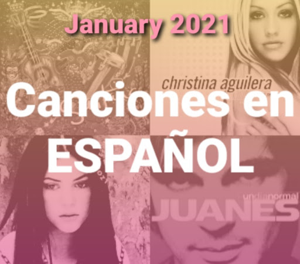

January 31, 2021

My Personal Playlist: Musicas en Español
Listen on Spotify
Something interesting happened. The releases of the last couple of months weren't much of my taste (with few exceptions) and I started to learn Spanish. As music is an essential part of my day, of course, I would do a playlist dedicated to songs in this beautiful language.
From Shakira's early days to more modern pop-rock Spain and Latinamerica artists, this is the first draft. This list will certainly grow as my study progresses.
I've been pulling those from
LyricsTraining
and friend recommendations but you can send me your best picks at anytime to my twitter
@livialimatweets.
Gracias y disfruta las canciones:
- Corazón Espinado (feat Maná) - Santana
- Falsas Esperanzas - Christina Aguilera
- Estoy Aquí - Shakira
- A Dios Le Pido - Juanes
- Drinkin' Problem (Brindemos) - Midland, Jay de la Cueva
- Ven Conmigo (Solamente Tú) - Christina Aguilera
- Corazón Partío - Alejandro Sanz
- Suerte (Whenever, Wherever) - Shakira
- Genio Atrapado - Christina Aguilera
- Una Noche Más - Jennifer Lopez
- Pies Descalzos, Sueños Blancos - Shakira
- Donde Estás Corazón - Shakira
- Con Los Pies En El Suelo - Cepeda
- Entre la espada y la pared - Fito y Fitipaldis
- Hay Poco Rock'N'Roll - Platero Y Tu
- Me Vale - Miki Núñez
- Chocolate Y Caramelos - David Rees
- Bailando Solo - Los Bunkers
- Puto - Molotov
- Estático - Zurdok
- Si Me Adverti - Zurdok
- Disculpa Los Malos Pensamientos - PXNDX
- En el 2000 - Natalia Lafourcade
- Tú Sí Sabes Quererme (feat Los Macorinos) - Natalia Lafourcade